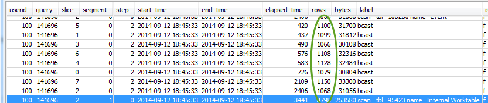
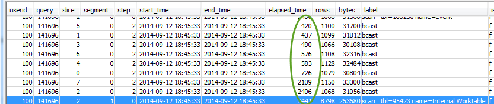

SVL_QUERY_REPORT ビューの使用
クエリの概要情報をスライスで分析するには、以下を実行します。
-
次の操作を実行してクエリ ID を調べます。
select query, elapsed, substring from svl_qlog order by query desc limit 5;substringフィールドの切り捨てられたクエリテキストを調べ、どのquery値がクエリを表しているかを確認します。クエリを複数回実行した場合、query値が小さい行のelapsed値を使用します。これは、コンパイル済みバージョンの行です。多くのクエリを実行している場合、クエリが確実に含められるように、LIMIT 句により使用される値を大きくすることができます。 -
クエリの SVL_QUERY_REPORT から行を選択します。segment、step、elapsed_time、rows により結果を並べ替えます。
select * from svl_query_report where query = MyQueryID order by segment, step, elapsed_time, rows; -
各ステップで、すべてのスライスがほぼ同じ数の行を処理していることを確認します。
さらに、すべてのスライスにほぼ同じ時間がかかっていることを確認します。
これらの値が大きく異なる場合、この特定のクエリの分散スタイルが十分最適でないことによるデータ分散スキューを示している可能性があります。推奨される解決策については、「十分最適でないデータ分散」を参照してください。